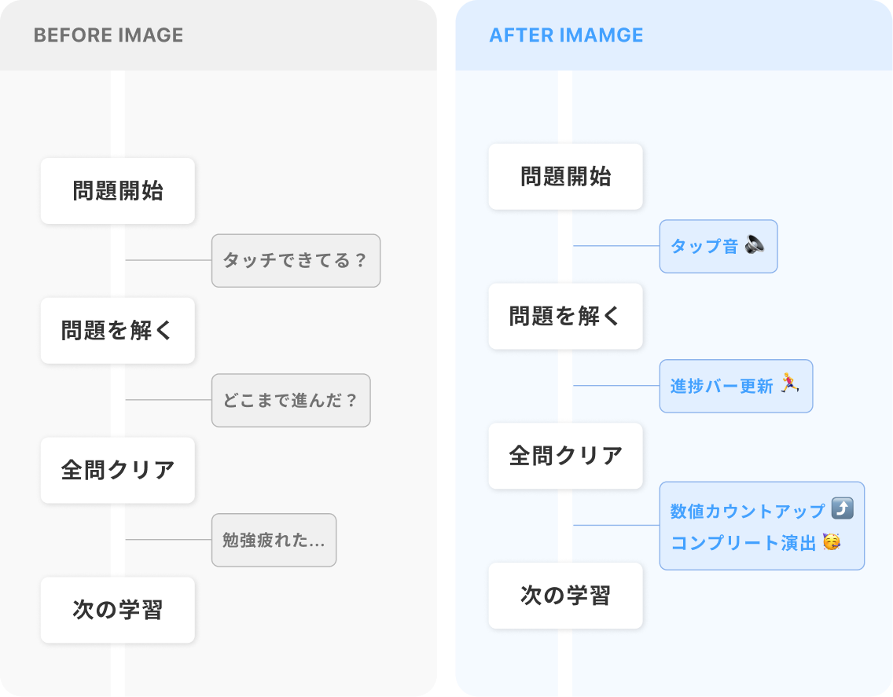
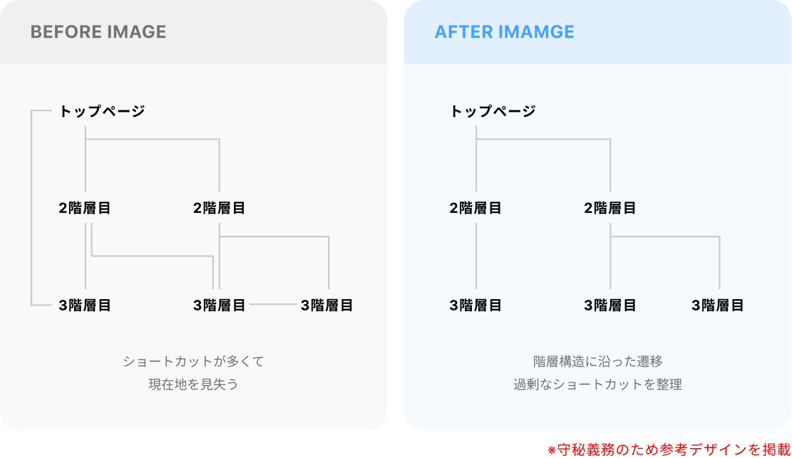

算数学習アプリ
楽しく学び続けられる。
小学生の算数学習を一貫して
サポートする教育アプリ。
Overview概要
大手教育企業が提供する小学生向け算数学習Webアプリにおいて、リリース前のUI/UX改善および機能追加に伴うデザイン対応を担当しました。

● このサービスを一言で表すと
計算トレーニング、授業視聴、テスト受験まで、
小学生の算数学習を一貫してサポートする教育プラットフォーム。
● 主なユーザー
・小学生（4〜5年生）：ブレットで学習
・先生：PCで進捗管理・採点
・保護者： スマホ・PCで学習状況確認（レスポンシブ）
-
●︎︎ 業界：教育 / EdTech
● ボリューム：約100画面
● ツール：Figma
● 担当業務：UI/UXデザイン、デザインシステム構築、機能追加対応
● サービス形態：toC SaaS -
●体制：
PdM 2〜3名
クライアント企業デザイナー 2名
デザイナー 1〜2名
開発 20名程度
どんなアプリ？
このアプリは、小学4〜5年生を対象とした算数学習プラットフォームです。
計算トレーニングで基礎力をつけ、授業動画で単元を学習し、確認テストや週テストで定着度を確認する、という一連の学習サイクルを1つのアプリで完結できます。採点はAI先生キャラクターが行い、励ましやヒントを交えながら子どもたちの学習をサポートします。
ゲーム感覚で楽しく学べる工夫が随所に施されており、「勉強が苦手な子でも継続できる」ことを目指して設計されています。
Works業務内容など
主な担当業務
本プロダクトは、デザインフェーズが終了し、開発フェーズと並行したリリース前のプロトタイプ検証を行なっていました。その中で明らかになった課題の改善から、継続的な機能追加まで、UI/UXデザイン全般を担当しました。
主な対応内容は以下の通りです。
・クライアントから提示された課題整理
・ユーザー視点での仮説立案
・既存デザインシステムを前提としたUI設計・UX改善
・デザインシステムの更新および実装指示
その中でも特に注力した代表的な改善例をご紹介します。

直感的な操作性の向上
課題
操作性に関する課題も複数見つかりましたが、ここでは特に改善効果が大きかったペンツールの操作改善を例に紹介します。
本アプリには、算数の途中式や筆算を書き込むためのペンツール機能があります。子どもたちはこのペンを使って、タブレット上で自由に計算過程を書き込むことができます。
従来の仕様では、ペンツールを長押しすると吹き出しが表示され、そこから色や太さを変更できる設計になっていましたが、以下のような問題がありました。
・「長押し」という操作に気づかない：小学生にとって「長押し」は直感的な操作ではなく、多くの子どもがペンの色を変える方法を発見できていませんでした
・操作の手間：毎回長押しして吹き出しを表示する必要があり、頻繁に色を変える子どもにとってストレスになっていました
改善内容
ペンの色・太さ選択アイコンを常時表示に変更しました。これにより、「長押し」という操作をしなくても、画面を見れば「ここで色が変えられる」と直感的に分かるようになりました。
特に色選択アイコンは、以下のような工夫を施しました。
・現在選択中の色が中央の●に表示される：「今どの色を使っているか」が一目で分かる
・周囲に選択可能な色が配置される： 次に選べる色が視覚的に示されるため、「どんな色が使えるか」がすぐ理解できる
・操作ステップの削減： 長押し不要で、タップ1回で色を変更できる
・感覚的に選択可能：選択肢の情報が減り、迷いが生じなくなる

キャラクターのセリフ設計
課題
ユーザビリティ面だけでなく、学習体験を支えるコンテンツ設計にも取り組みました。その一例が、AI先生キャラクターのセリフ設計です。
本アプリには、採点や励ましを行う「AI先生キャラクター」が登場します。子どもにとって、このキャラクターは単なる採点者ではなく、学習を支える伴走者としての役割を担っています。
しかし、プロトタイプ段階ではセリフが形式的で、子どもへの適切なフィードバックになっていませんでした。具体的には、間違えたときのフィードバックが「惜しい！」だけで情報がないことや、どこをどう直せばいいのか分からない問題がありました。
改善内容
AI先生のセリフを、子どもの心理状態に配慮した「褒め+指摘/アドバイス」の構造に再設計しました、
・立式ミス・転記ミスの場合
→ 「褒め + 指摘」 の形で、見直しが必要な箇所を明確に伝える
例：「よく考えられているね！でも、この式のここをもう一度確認してみよう」
・途中計算ミスの場合
→ 「褒め + アドバイス」 の形で、正解へ導くヒントを提示
例：「惜しい！計算の途中でちょっとだけミスがあるみたい。もう一度ゆっくり計算してみよう」
このように、途中までの過程を認めながら、「どこを見直せばいいか」のヒントを与えることで、子どもが自力で正解にたどり着けるよう設計し、「間違えても大丈夫」「もう一回やってみよう」と前向きに取り組める言葉選びを心がけ、学習意欲を損なわないフィードバック設計を行いました。

ゲーム感覚で楽しめる体験設計
課題
小学生が自主的に学習を続けるためには、「楽しさ」と「達成感」を感じられる体験が不可欠です。しかし、従来の学習アプリは「勉強」という印象が強く、子どもにとって心理的なハードルが高い傾向がありました。
本プロダクトでは、ゲーム感覚で取り組める工夫が求められていましたが、プロトタイプ段階では視覚的・聴覚的なフィードバックが不十分で、「問題を解いている実感」や「進んでいる感覚」が薄く、子どもが飽きない工夫が不足している状態でした。
改善内容
アニメーションと音を効果的に活用し、学習の各ステップで「進んでいる感覚」と「達成感」を体感できる設計に改善しました。
- 進捗の可視化：問題を1問解くごとに進捗バーが塗り足されるアニメーションを追加。視覚的に「前に進んでいる」実感を与える
- 状態遷移の明確化： 次の問題へ進むボタンを押したときに、進捗が更新されるアニメーションで「ゴールに近づいている」ことを明示
- 数値のカウントアップ： 学習時間・正答率の数字が0から段階的に増えていく演出で、達成感を増幅
- コンプリート演出： 問題を全て解き終えたときのリッチなアニメーションで、達成の瞬間を盛り上げる
また、タブレット操作では、視覚情報だけでは「ちゃんと押せているか」が分かりにくいため、音によるフィードバックを重視しました。
音のデザインでは、Nintendo
Switchのシステム音のような「うるさすぎず、心地よい」バランスを目指し、子どもが長時間使っても疲れない配慮をしました。
音の種類は最低限に絞りつつ、さりげない音で「タッチできている」ことを確認できるようなタップ音や、それよりも少しリッチなボタン押下時の音をつけるなどして、子どもが音から操作を認識できるような設計を心がけました。

{kind=link}
保護者向け画面の導線整理
課題
子ども向けアプリだけでなく、保護者向け画面の改善にも取り組みました。
保護者向けアプリは、子どもの学習状況を確認するためのシンプルな機能が中心で、画面数は多くありませんでした。しかし、利便性を高めるために過剰なショートカットが設置されており、結果として階層構造が分かりにくくなっていました。
具体的には、トップページから各機能へ直接飛べるショートカットが多すぎたり、同じ情報に複数のルートでアクセスできるため、「今どこにいるのか」が分からなくなるなどの問題が発生していました。
また、保護者はスマホとPCの両方からアクセスするため、レスポンシブデザインでの対応でしたが、スマホとPCでボタンの位置が変わるなどが原因で、ユーザーの混乱を招く設計になっていました。
改善内容
過剰なショートカットを最小限に整理し、基本的には階層構造に沿った遷移を採用しました。ショートカットは「削除すると操作性が損なわれる、頻繁にアクセスする主要機能のみ」に限定し、どこから見ても今どの階層にいるかが分かるようにしました。
また、保護者は外出先ではスマホ、自宅ではPCを使うことが多いため、どちらのデバイスでも同じ操作感で使えるよう、レスポンシブデザインで統一しました。画面サイズに応じてレイアウトは変わりますが、情報の優先順位や構造は一貫させることで、デバイスを切り替えても迷わない設計を実現しました。

{kind=link}
拡張性を見据えたデザインシステム構築
課題
個別の改善対応と並行して、プロダクト全体の拡張性を高める取り組みも行いました。
本プロダクトは、リリース後も継続的に機能が追加されることが想定されていました。短期的な対応だけを考えた設計では、機能追加のたびにデザインが破綻し、開発コストも増大してしまいます。
そこで、将来的な成長を見据え、拡張性の高いデザインシステムを構築することを重視しました。具体的には、「新しい機能を追加しても、既存のコンポーネントで対応できる」「例外的なデザインを増やさない」「どの学年・科目でも使える汎用性」の3点を意識しました。
具体的な取り組み
新しい機能を追加する際、「この機能専用の新しいコンポーネント」を作るのではなく、既存のコンポーネントを組み合わせて対応できないかを常に検討しました。どうしても新規コンポーネントが必要な場合も、既存のデザインルールに準拠し、一貫性を保つよう配慮しました。
例えば、トグルボタンを追加する際は、他のユーザータイプのトグルボタンのデザインを参考に、デバイスに適したデザインに調節します。その際、新しいスタイルを作るのではなく、基本のボタンの種類色やサイズのバリエーションで対応するなどして設計しました。
本プロダクトは小学4〜5年生向けですが、将来的に低学年や高学年にも展開される可能性がありました。そのため、特定の学年に依存しないデザインを心がけ、「小学生全般が使える」汎用性を確保しました。
また、算数以外の科目（国語・理科など）への横展開も検討されていました。そのため、「算数専用」のデザインではなく、他の科目でも応用できる汎用的なコンポーネント設計を意識しました。
例えば、問題表示エリアや解答入力エリアは、科目に依存しない構造にし、幅広い形式の問題にも対応できるよう設計しました。